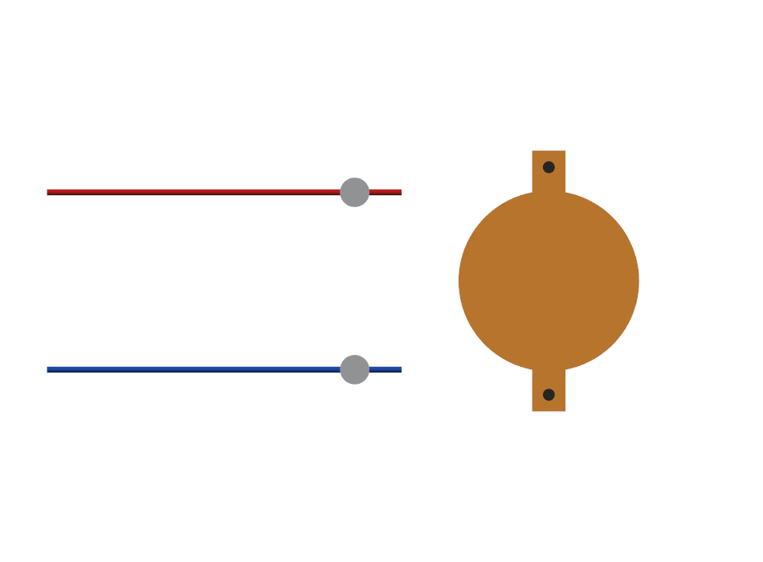
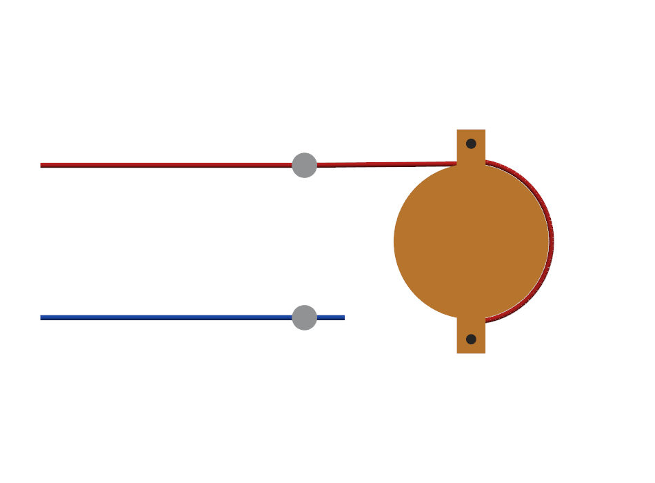
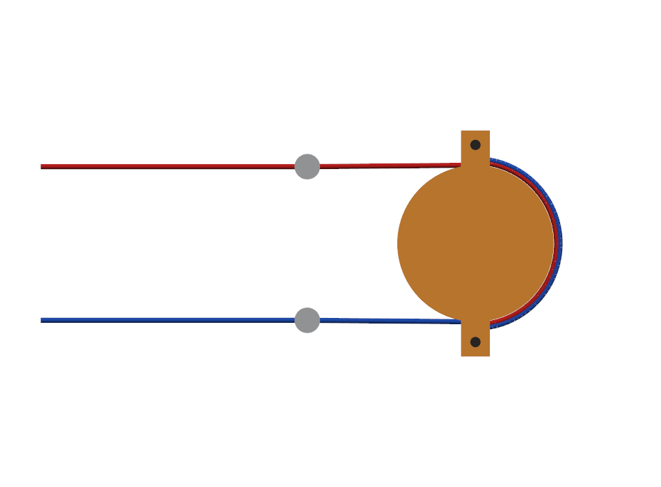
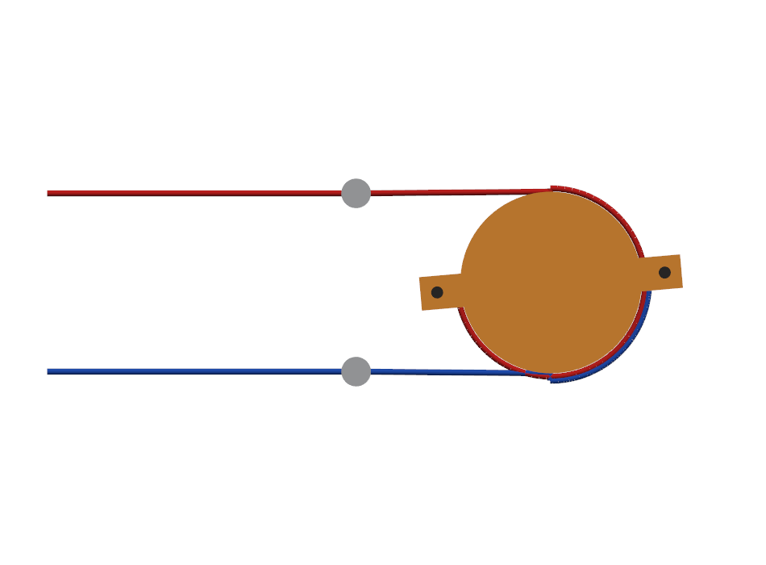
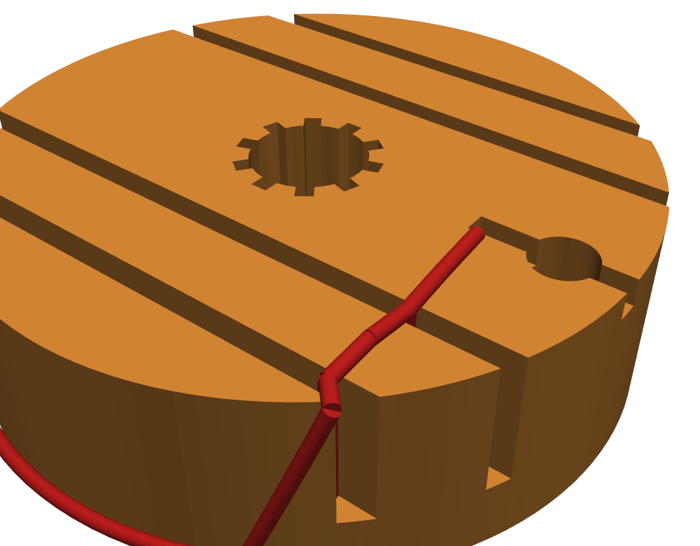
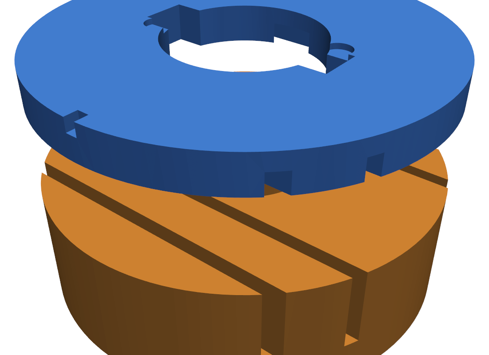

Гриф и ролики — слева. Красная нить — от верхнего ролика, синяя — от нижнего. Мотор — «🖐 Отпустить».
Тележку рукой — в центр хода. Сектор поверни так, чтобы ушки смотрели поперёк (вертикально на картинке: одно к верхнему ролику, другое к нижнему). Нити пока свободны.

Красную нить веди от её ролика вокруг дальней (правой) стороны цилиндра примерно полоборота — к нижнему ушку. Натяни рукой без провиса и привяжи двойным узлом.

Синюю нить веди от её ролика вокруг той же дальней стороны, но навстречу (снизу вверх) — к верхнему ушку. Натяни и привяжи. Нити лягут рядом по правой стороне — это нормально, они на цилиндре не трутся: работают на разных дугах.

Прокати тележку рукой до упоров: сектор крутится, одна нить доматывается, другая отдаётся, обе всегда натянуты. На картинке — тележка у правого края: красная намоталась почти на ¾ оборота, синяя отдалась до короткой дуги.

После обхвата подними нить по боку и заведи U-змейкой через пару пазов: вниз до дна первого паза → вверх → через гребень → вниз во второй → вверх, хвост наружу. Натяг регулируется протяжкой нити с усилием — а рабочая тяга держится на перегибах, без узлов. У каждой нити своя пара пазов (по разные стороны от звёздочки).

Твист-лок (крышка-байонет): в положении «О» (риски совпали) нить свободно протягивается через пазы — выставь натяг; надень крышку штифтами во входы и поверни на 18° до щелчка — гребёнка крышки запирает нить в пазах. Открыть: поворот обратно до «О».
